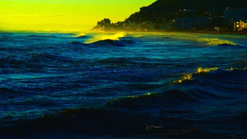

Le livre d´image
The Image Book

Jean-Luc Godard
|
85 min – HD – Französisch, Englisch, Russisch, Arabisch B+S+T: Jean-Luc Godard – K: Fabrice Aragno, Jean-Luc Godard, Jean-Paul Battaggia – P: Fabrice Aragno – V: Grandfilm
|
donnerstag 11 okt 19.00 filmmuseum
münchen
eröffnung
„LE LIVRE D’IMAGE ist mehr ein Rätsel als ein Puzzle, und die raunende Stimme des Altmeisters selbst tut einiges dafür, Fährten zu legen. Godard ist wie eh und je ein wahnwitziger Produzent an Formel-Thesen, die zumindest als Einstiegspunkte zur Erkundung seiner Collagen funktionieren. Und die, das ist ihre magische Kraft, sich tief einbrennen, zu jeder Gelegenheit wieder aus dem Unterbewussten aufploppen können, um die Welt zu erklären. Denn das ist schon immer ihre Anlage: gleich auch die gesamte Filmgeschichte zu entschlüsseln, einen Pfad ins intellektuelle Vermögen zu schlagen, um Dinge neu zu ordnen, Facetten zu betonen, Weisheiten gleichzeitig zu behaupten und sich der Festschreibung zu entziehen, Wissen zu wissen und zu hinterfragen. Hier zum Beispiel über das Verhältnis von westlichem Kino zu Bildern von arabischem Leben.” (Frédéric Jaeger)
Jean-Luc Godard Geboren 1930 in Paris. Vor- und Querdenker des Kinos, Mitbegründer der Nouvelle Vague und einer der ersten Filmregisseure, die sich mit den Möglichkeiten des Videos auseinandersetzten. Seine späteren Filme sind filmhistorische Reflexionen, die die großen Themen der Politik und des Weltkinos zusammendenken. Godard war Kritiker der „Cahiers du Cinéma“, bevor er mit dem Filmemachen begann. |
| Films Le Mépris 1963 – Week End 1967 – Soigne ta droite 1987 Histoire(s) du Cinéma 1989–1999 Film socialisme 2010 – 3x3D 2013 Adieu au langage 2014 – Grandeur et décadence d’un petit commerce de cinéma 1986 / 2017 (12. UX) |